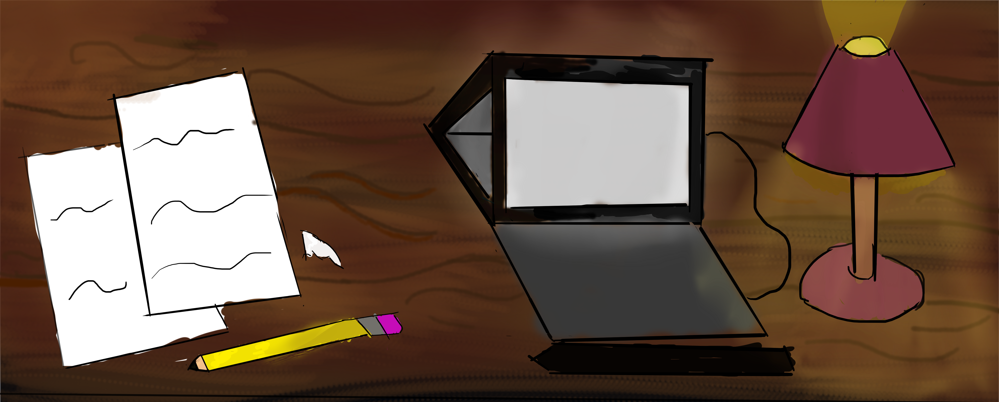

Hola, soy C, el programador y diseñador de Sahm Sahra Workbench, y un intento... de dibujante digital, el cual aún sigue aprendiendo y mejorando su estilo y técnica. Les doy la bienvenida. Esta página actúa como un blog personal, en el que posteo trabajos y prácticas relacionadas con el dibujo.
Este blog estará dedicado a compartir mi progreso,
desde bocetos hasta dibujos completos,
(y puede que algo de animación).

Como les hiba diciendo, en esta página habrá un montón de reflejo del proceso creativo que hay detrás de cada dibujo, Y como gusto personal me gustaria añadir una cierta dinámica narrativa la cual explicaré a continuación
Está página está basada en un concepto que me gusta llamar "Triple S". "Triple S" es la dinámica de grupo que le he dado a 3 de mis personajes originales (a partir de aquí usaré OC para referirme al termino personaje original).
El concepto de "Triple S" consiste en una dinámica narrativa donde, a lo largo de la página (en lugar de simplemente que el texto sea escrito en primera persona por mí), el texto representará la personalidad de uno de los 3 personajes. Puede que incluso haya interacción entre uno o más de estos a la hora de opinar, contar algo o describir una imagen (a continuación mostraré ejemplos de esto).
1-1 ¡HOLA!? ¡HOLA! ¿¡¡AL FIN ENTRO YO!!!? Al habla Sahm. ¡Es un gusto conocerlos! ¡Espero que la pasen súper way!
2-1 ¡HEY! ¿¡AHORA DE RAYOS ESTÁS LADRANDO, MENTIROSA!?
3-1 Ella comenzó. ¡No me regañes solo a mí
4-2 BIENVENIDOS! Estaré dando vueltas por todos lados, ¡así que nos veremos pronto! ...Tan pronto... termine de... aprender a moverme... por... este lugar.
1-2 Hellow~, al habla Sahra^^ ¿Así que... por fin estamos al aire? Este lugar necesita... arreglos... Se ve muy... Jum... jocoso. Quiero decir, lo único con estilo... es el Rojo.
2-2 TKS, solo digo la verdad. ¿Algún problema?
3-2 Eso. Deja de gritarme al oído... no es mi culpa que te haya tocado los nervios, Jezz.
4-1 Pásense por galería para la mejor sección de la página, donde me la suelo pasar más~. Lo bonito tiene que juntarse con cosas bellas, jeje.
1-3Hola.Mi nombre es Sack. Mucho gusto y bienvenidos a—
2-1 ¿Ustedes dos de nuevo peleándose?¿No pueden ser más ruidosos?
3-1 Compórtense por un momento y terminemos esta sección Ejem... como estaba diciendo. Bienvenidos.
4-3 A mí... me encontrarán más en la parte técnica de la página, y puede que, de vez en cuando, si tengo que explicar algo muy técnico, en #historia.
bueno, espero haya quedado claro. Muchas gracias por pasarte por este pequeño proyecto, que iré desarrollando a medida que mis capacidades de programación y dibujo mejoren.